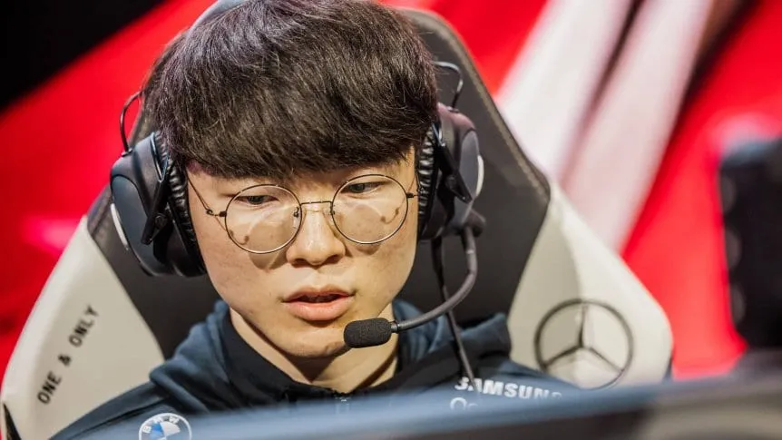
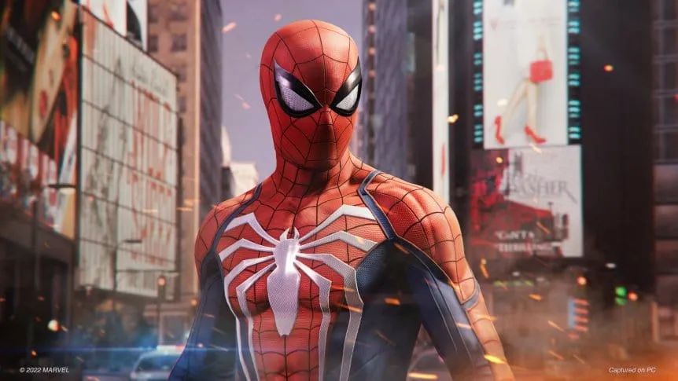

ㅤFree Fire es el shooter mobile más popular del mundo y para que sus jugadores
puedan obtener recompensas gratis, Garena publicó los códigos de Free Fire y Free Fire MAX de hoy, lunes
17 de octubre, que se podrán canjear online a cambio de diamantes, armas, skins y otros objetos más.
Cabe remarcar que estos son códigos de Free Fire y Free Fire MAX que brinda la propia compañía desarrolladora
del juego, Garena, por lo que conseguir recompensas gratis así es totalmente legítimo y no da ningún motivo
para temer por una suspensión o banneo. Tienen una validez de 24 horas, pasado ese tiempo ya no se pueden
susar. Por último, también hay que considerar que algunos códigos pueden no ser válidos para ciertas regiones.
- TFF9VNU6UD9J
- PACJJTUA29UU
- TJ57OSSDN5AP
- HAYATOAVU76V
- FFICDCTSL5FT
Worlds 2022 | T1 ganó su grupo y Fnatic quedó eliminado
ㅤEl conjunto liderado por Faker perdió sólo una partida y se impuso en la zona A. En tanto, los europeos dijeron adiós tras un gran comienzo.

ㅤT1 perdió nada más y nada menos que en su segundo duelo en Nueva York frente a un
Fnatic que venía desde el Play-In. Sin embargo, esta sorpresiva caída fue sólo un
susto para los coreanos, que luego arrasaron ante los chinos, los europeos y los
norteamericanos de Cloud9.
Increíble fue el paso de Fnatic por el main stage. Luego de la gran actuación ante T1
y de vencer en su presentación a Cloud9, el club radicado en Gran Bretaña perdió sus
siguientes cuatro encuentros y quedó eliminado junto a los norteamericanos.
Análisis de Marvel’s Spider-Man Remastered para PC: una adaptación a la altura
Jugamos la versión para PC del emblemático y remasterizado título lanzado en 2018. Te contamos qué nos pareció.

ㅤSony continúa con la tendencia de desembarcar en PC con sus títulos más relevantes.
Tal como sucedió anteriormente con Horizon Zero Dawn o God of War, ahora llega el turno
de Marvel’s Spider-Man, uno de los mejores juegos lanzados en 2018, que llega en su versión
remasterizada.
Por si queda algún desprevenido que no lo sepa: Spider-Man es un juego de mundo abierto que
tiene como protagonista al más carismático de los superhéroes de Marvel. Ambientado en una
versión de Manhattan que combina locaciones reales y ficticias, esta aventura nos ofrece por
primera vez una experiencia inmenrsiva e intuitiva de control sobre el hombre araña con un
sistema de movimiento brillante y un combate a la altura de los mejores del género.
A lo largo de esta historia podremos además enfrentarnos con algunos de los villanos clásicos
del universo de Spidey como Dr Octoupus, Rhino o Kingpin.
Pero no estamos acá para hablar del juego en sí, que ya hemos rankeado bien alto en su día,
sino de su port para PC. Y en este apartado hay que decir que, aunque a veces esta adaptación
es un proceso complicado, en Spider-Man todo funciona a la perfección.
El juego va completamente fluido, sin errores de renderización y con una adaptación impecable
al control de Playstation 5, cosa que descubrimos muy pronto, cuando vimos que nos resultaba
difícil jugarlo con teclado y mouse.
ㅤEn cuanto a lo visual, por supuesto que dependerá de las prestaciones de tu PC, pero hay
que decir que en un equipo con la potencia suficiente para jugarlo en el seteo ideal, esta
versión no tiene rivales y supera con margen a la remasterización que vimos en PS5.
Los gráficos son increíbles a tal punto que generan un déficit en el equilibrio entre cómo
se ve y cómo se juega. Ojo, que no se malentienda Marvel’s Spider Man es una verdadera joya,
pero sigue siendo un juego lanzado hace 4 años. Y al ver la ciudad con los gráficos de un
título de última generación, nos gustaría un desarrollo más profundo del mundo abierto,
porque explorarlo es ahora mucho más placentero. Y las misiones de buscar mochilas o arreglar
antenas nos dejan sabor a poco.
En resumen, si sos jugador de PC y nunca jugaste Spider-Man, esta versión es inmejorable por
prestaciones gráficas y porque incluye sus DLC. Por nuestra parte, volvimos a disfrutar de
este título y lo vimos más lindo que nunca.
NOTA: 9
Tendencia: Blizzard - Overwatch 2 - League of Legends - Worlds 2022 - Impuestos - Free fire